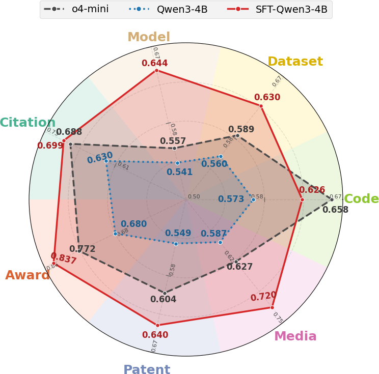
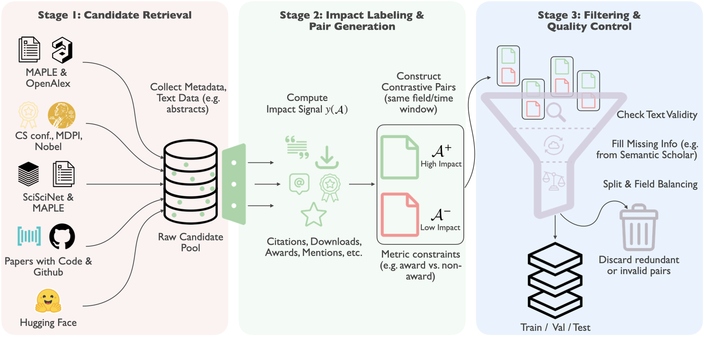
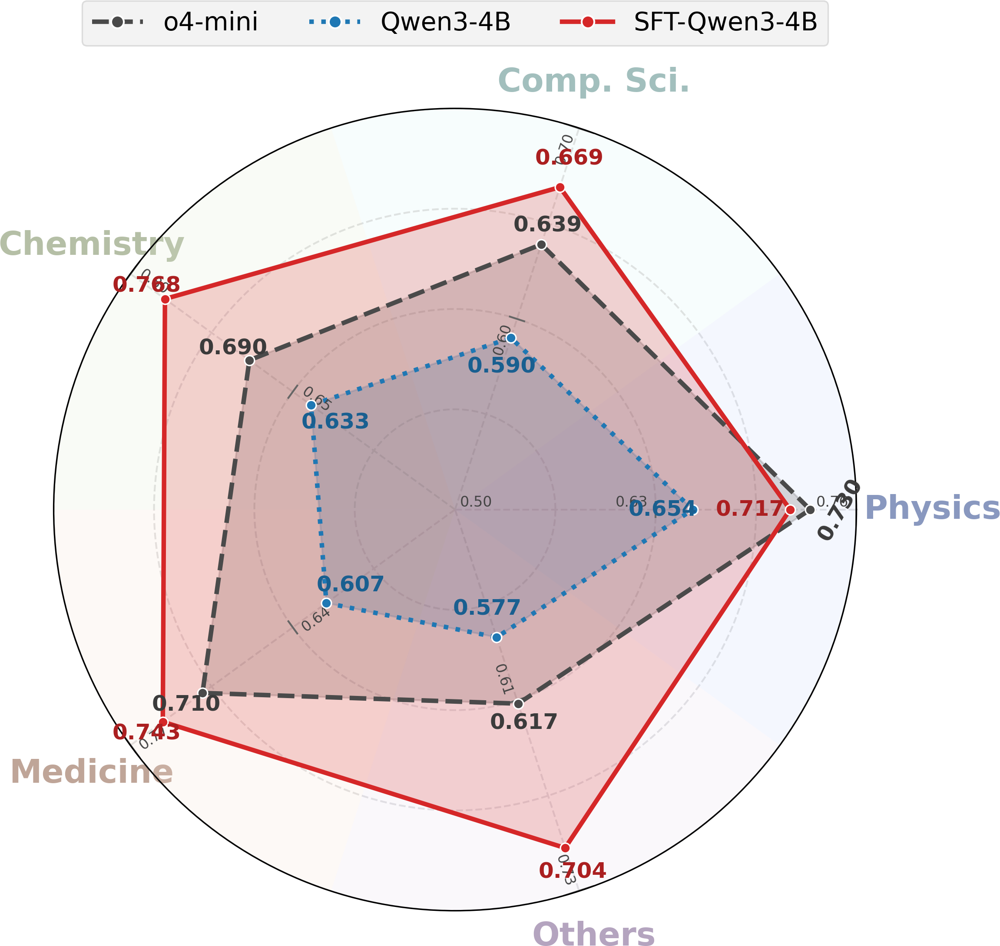
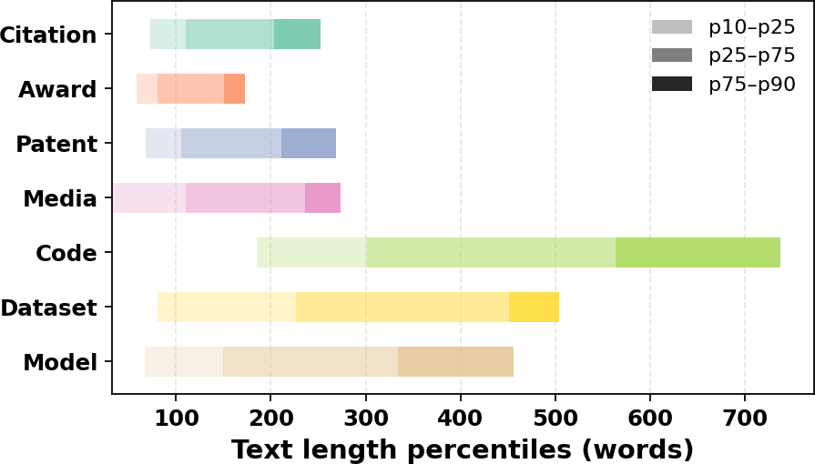

Benchmark scope
19 fields from computer science and medicine to history, sociology, and philosophy.
Multi-dimensional scientific impact prediction
SciImpact turns scientific impact prediction into a benchmark that spans 7 impact dimensions, 19 scientific fields, and 215,928 contrastive pairs. The benchmark shows that task-specific supervised fine-tuning lets compact open-weight models outperform much larger baselines.
1Texas A&M University 2Verdent AI 3University of Waterloo

Abstract
The paper argues that scientific impact cannot be reduced to citations alone. SciImpact broadens evaluation to include Award, Patent, Media, Code, Dataset, and Model signals, while still preserving the classical Citation setting.
Each benchmark instance is a contrastive pair from the same field, asking models to decide which artifact has higher impact under a specific dimension. This gives a clean way to compare models across short-term and long-term impact settings without collapsing everything into one noisy score.
19 fields from computer science and medicine to history, sociology, and philosophy.
Paper title plus abstract, GitHub README files, Hugging Face dataset cards, and model cards.
Supervised fine-tuning turns a 4B model into the strongest average system across dimensions and fields.
Benchmark

Collect candidate artifacts and metadata from MAPLE, OpenAlex, SciSciNet, Papers with Code, GitHub, and Hugging Face.
Compute dimension-specific impact signals and build contrastive pairs under matched field and time constraints.
Recover missing text, filter invalid items, remove duplicates, and balance train, validation, and test coverage.
SciImpact spans art, biology, business, chemistry, computer science, economics, engineering, environmental science, geography, geology, history, materials science, mathematics, medicine, philosophy, physics, political science, psychology, and sociology.
Results

After supervised fine-tuning on SciImpact, a 4B model can match or surpass larger open-weight systems and even strong closed-source baselines.
Models perform best on award-related judgments, while dimensions such as Patent and Media remain harder because they depend on broader external factors.
The benchmark exposes where textual signals are sufficient and where models likely need additional context beyond the artifact text itself.
Data profile
Abstract-based tasks such as Citation, Award, Patent, and Media stay relatively compact. In contrast, repository README files and Hugging Face cards are much longer and more variable, which makes the benchmark meaningfully heterogeneous even before modeling begins.
The paper standardizes evaluation by truncating inputs when needed, so models must learn to extract impact-relevant cues under a controlled prompt budget.

Citation
@misc{zhu2026sciimpactmultidimensionalmultifieldbenchmark,
title={SciImpact: A Multi-Dimensional, Multi-Field Benchmark for Scientific Impact Prediction},
author={Hangxiao Zhu and Yuyu Zhang and Ping Nie and Yu Zhang},
year={2026},
eprint={2604.17141},
archivePrefix={arXiv},
primaryClass={cs.CL},
url={https://arxiv.org/abs/2604.17141}
}